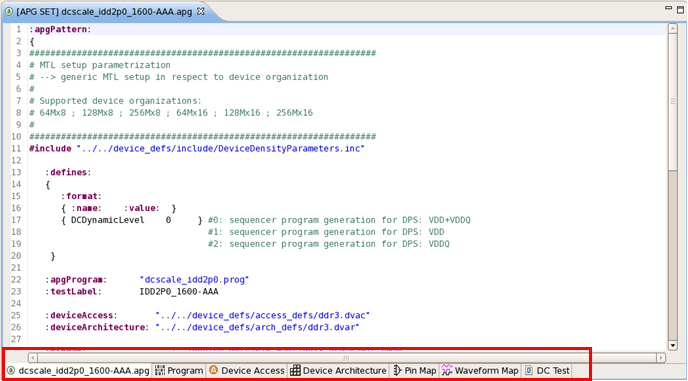
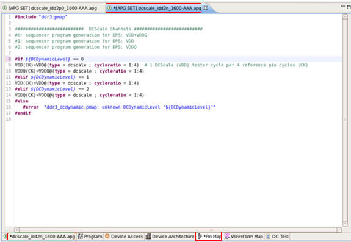
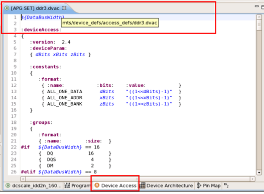
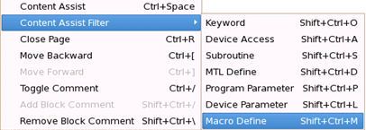

File management and shortcut menu with the MTP editor
In the MTP editor, opening and closing an MTP .apg file will cause the associated MTL setup files to open and close at the same time. By right-clicking the editor you will see a shortcut menu with various editing commands.
- Opening an MTP .apg file will also open the associated MTL setup files.

- When editing an MTL setup file, both this file and its associated .apg file will be marked
with an asterisk (*).

- When closing an .apg file, all associated MTL setup files will be also closed.
- When you hover your mouse over an editor title the relative path in the current device for
the file opened in this editor is shown.

shortcut menu commands in the MTP editor

Right-click an MTP editor and select:
- Content Assist and Content Assist Filter: Prompts the defined setups (APIs, keywords, preprocessors, and etc.) at where you to use. For details see Content assistant in the MTP editor.
- Close Page: Closes the currently displayed MTL setup file, but the .apg file and its basic MTL setup files cannot be closed by this command.
- Move Backward: Goes back to the previously edited MTL setup file.
- Move Forward: Goes back to the file where you applied the Move Backward command.
- Toggle Comment: Comments or un-comments the selected lines or blocks.
For information on how to select a block see Features in the editor view
of MTP-EWC.
The commented lines become gray and start with "#" except in the .prog files where the commented lines are started with "//".
- Add Block Comment: Available only for .prog files,
comments the selected block by adding "/*" and "*/" to
the start and end of the block.
For information on how to select a block see Features in the editor view of MTP-EWC.
- Remove Block Comment: Available only for .prog
files, uncomments code that has been commented with "/*" and
"*/".Note Keyboard shortcuts for these commands are summarized in Keyboard shortcuts with the MTP editor.
Functional changes
- Introduced in MTP 3.2.2
- MTP 3.3.2: Adds a new shortcut menu command, Content Assist Filter.
- MTP 3.3.2: The editor can display a relative file path to the used device for the opened MTL file.